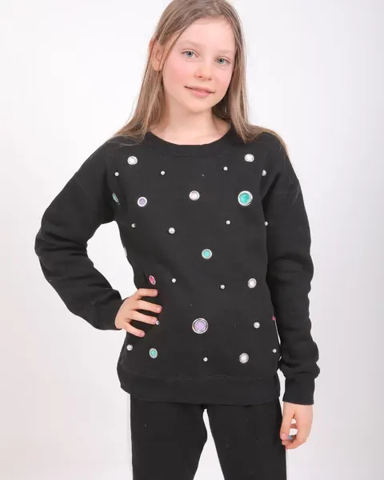
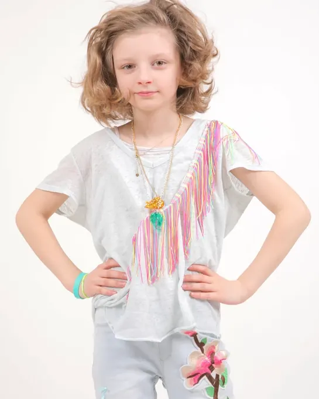
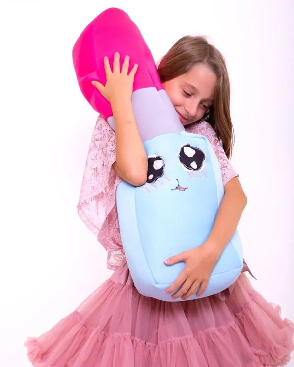
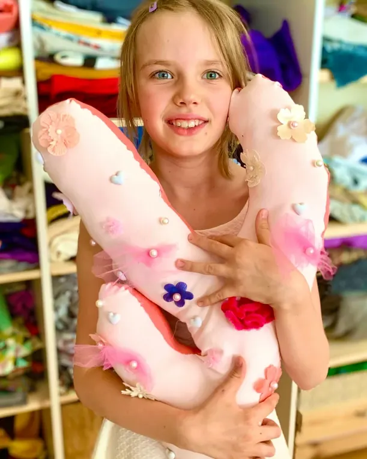
Krawiectwo
Bluzy, spodnie, spódnice, czapki i maskotki. Szyjemy na elektronicznych maszynach Janome.
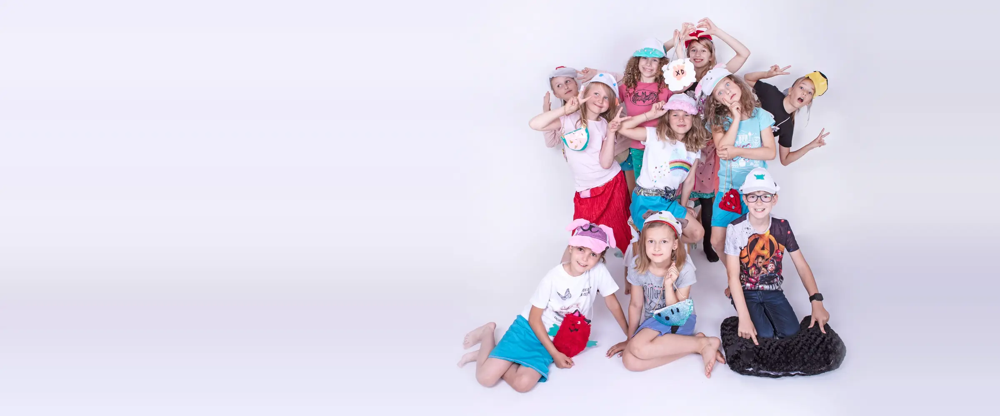
Dzieci i młodzież 7-17 lat wymyślają i wykonują własne bluzy, torebki, biżuterię, a nawet buty. Grupy 4-6 osób, każdy pracuje nad swoim projektem.
ul. Przy Bażantarni 13, Warszawa
tel. 782 258 267
Krawiectwo, kaletnictwo, biżuteria i szewstwo. Na każdej karcie można przesunąć zdjęcia palcem albo myszką.




Bluzy, spodnie, spódnice, czapki i maskotki. Szyjemy na elektronicznych maszynach Janome.
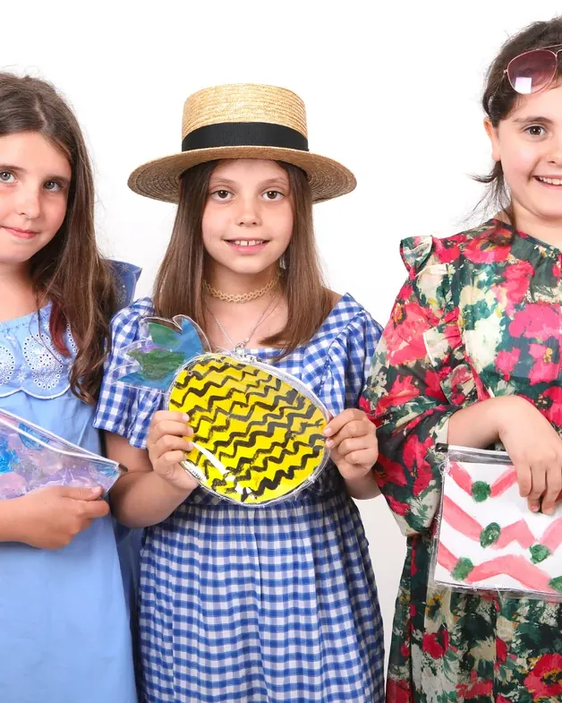
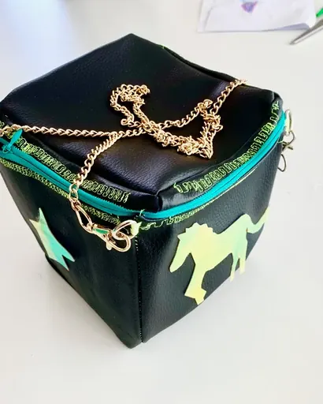
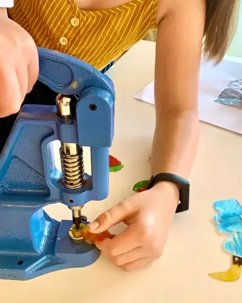
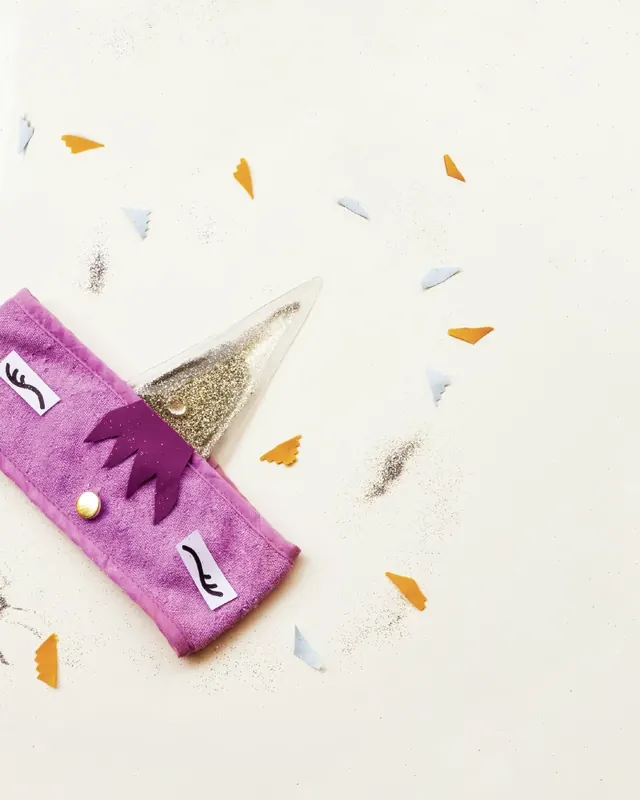
Torebki, saszetki, piórniki i plecaki. Nity i oczka zakłada się na prasach kaletniczych.
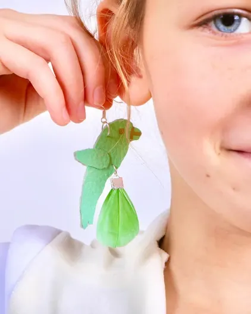
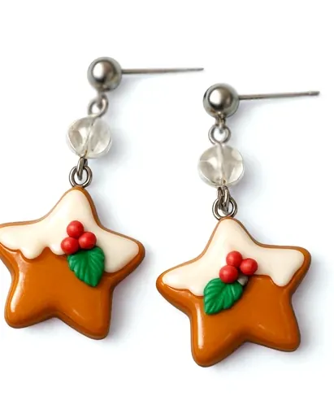
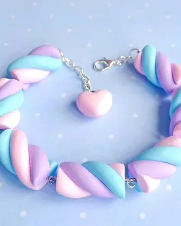
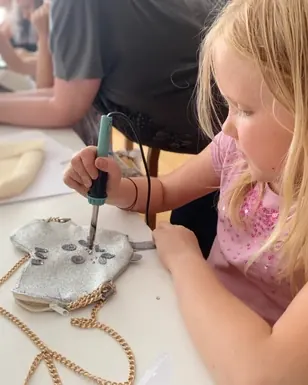
Kolczyki, bransoletki, breloki i broszki z masy plastycznej, koralików i półproduktów metalowych.
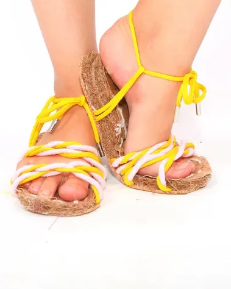
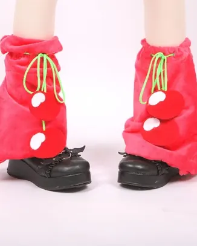
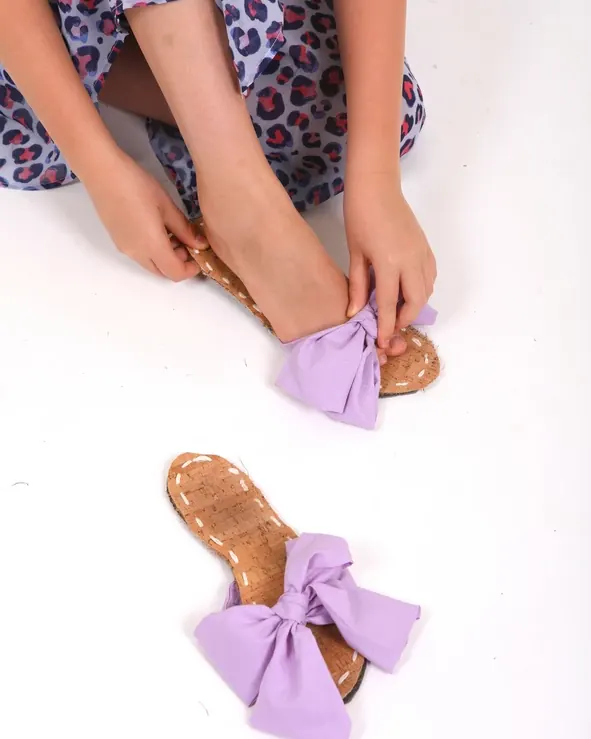
Sandały i inne buty według własnego projektu. Tak, w pracowni powstają też buty.
Nie zadajemy całej grupie jednego tematu. Uczestnik sam wybiera, co chce zrobić, a prowadzący przeprowadza go przez kolejne etapy w jego tempie. Praca nad jednym projektem zwykle trwa dłużej niż jedne zajęcia.
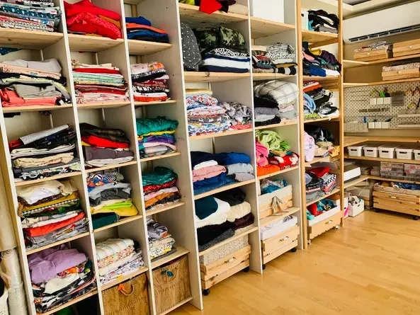
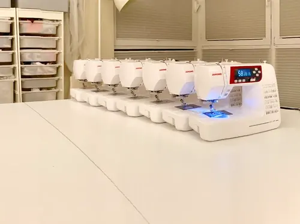
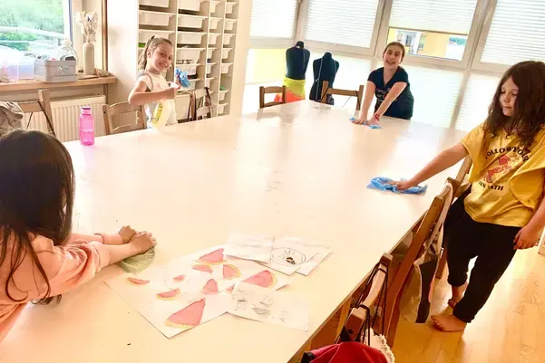
Jeśli jeszcze nas nie znacie, zacznijcie od zajęć próbnych. Wszystkie materiały i pomoce są w cenie.
70 lub 90 min
jednorazowe warsztaty
70 min / tydzień
raz w tygodniu przez cały rok szkolny
90 min / tydzień
raz w tygodniu przez cały rok szkolny
Poza zajęciami cotygodniowymi prowadzimy też półkolonie, urodziny i okazjonalne warsztaty rodzinne, np. świąteczne.
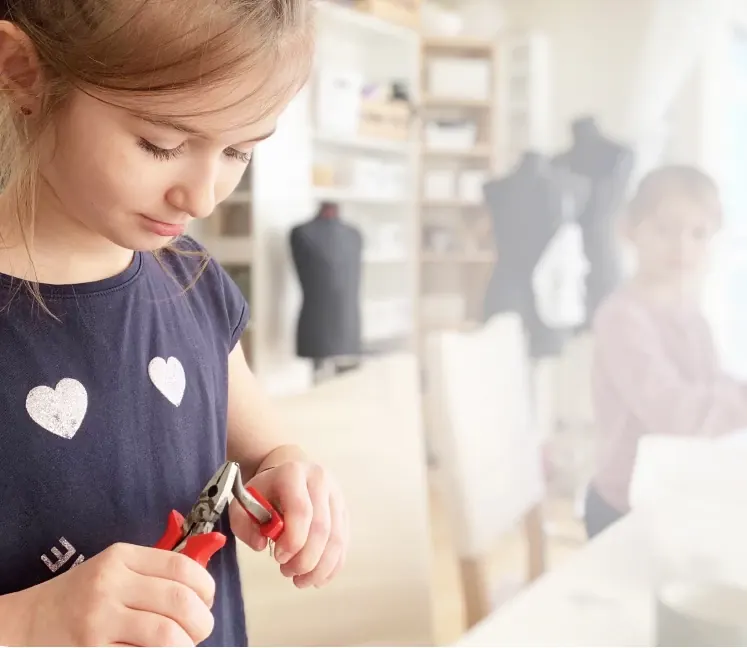
Agnieszka nie wierzy w siebie. Często upewnia się, czy jej decyzje są słuszne, i uważa, że nic jej nie wychodzi.
Hubert ma sto pomysłów na minutę, ale rzadko kończy to, co zaczął, i szybko traci entuzjazm.
Przejście całej drogi od pomysłu do gotowej rzeczy uczy więcej niż samego szycia: planowania, cierpliwości, kończenia tego, co się zaczęło, i wiary w siebie. To dziecko jest pomysłodawcą i twórcą, a prowadzący wspiera je w trudniejszych momentach.
Zapisz na zajęcia próbneZdjęcia z zajęć w roku szkolnym i z półkolonii, prace początkujących i zaawansowanych.
„Moja 9-letnia córka nauczyła się zaprojektować i uszyć sobie ubranie.”
Samodzielnie zaprojektowała i uszyła dla siebie czapkę w kształcie misia i nosiła ją przez całą zimę. Pani Maja traktuje każde dziecko indywidualnie, a odrobienie zajęć w innym terminie nigdy nie było problemem.
Inga Mroczek mama 9-letniej Mai
„Uczy się planowania, cierpliwości, wytrwałości i wiary w siebie.”
Ulubione zajęcia mojej córki. Dla niej najważniejsze, że dobrze się na nich bawi. Dla mnie, że uczy się tego, co może jej się przydać w przyszłości.
Pani Magdalena mama 10-letniej Mai
„Młodsza nie wyobraża sobie tygodnia bez tych zajęć.”
Starsza córka chodzi już drugi rok. Warsztaty pomogły jej w koncentracji i opanowaniu szycia, a młodsza rozwinęła wyobraźnię i chęć tworzenia.
Gabriela Garlicka-Pytlak mama Lili i Ali
„Każdy może pracować we własnym tempie.”
Marta zawsze niecierpliwie czeka na zajęcia, a potem z dumą pokazuje swoje prace. Bardzo lubi samodzielny wybór projektu.
Paweł Sztejter tata 12-letniej Marty
„Uczą dziecko porządku i systematyczności.”
Zdaniem córki zajęcia są ciekawe i bardzo wciągają. Pokazują, że zaangażowaniem i pracą można osiągnąć cel, który cieszy.
Małgorzata Demczuk mama 9-letniej Julki
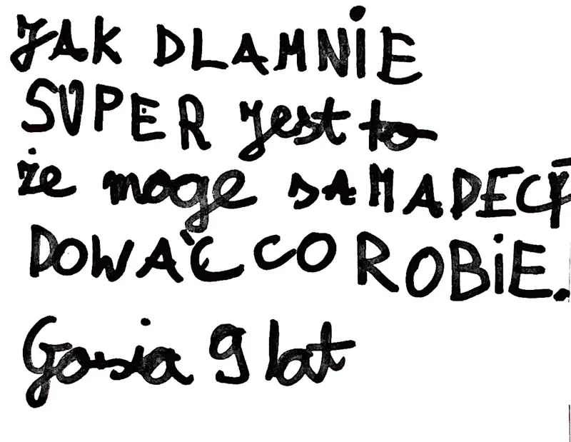
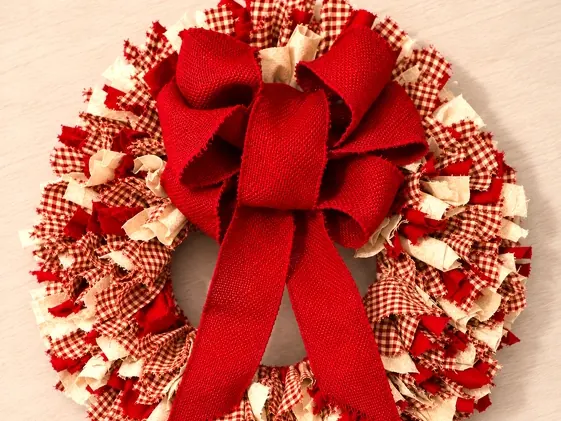
W ferie zimowe, w Wielkanoc i latem. Kilka dni projektowania, szycia, zabaw i wyjść na świeże powietrze.
Wieniec, poduszka, bombki albo maskotka. Wspólny czas nad jedną rzeczą, bez pośpiechu i bez ekranów. Materiały, narzędzia i sprzątanie są po naszej stronie.
Trzy godziny tylko dla siebie, przy winie bezalkoholowym. Wychodzisz z rzeczą zrobioną od początku do końca.
Przyjęcie urodzinowe w pracowni, przy wspólnym projekcie.
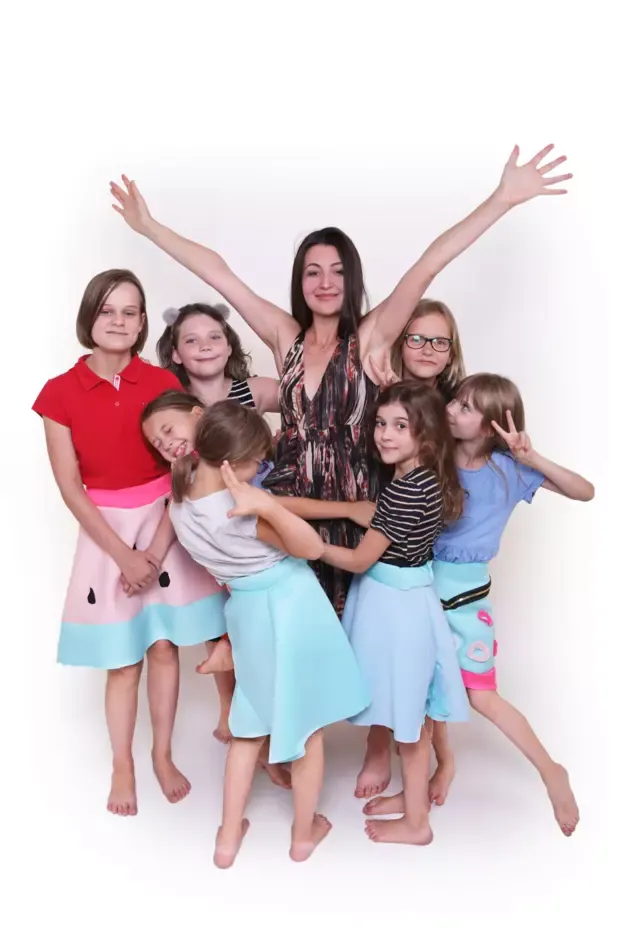
Chcemy, żeby pracownia była dla dzieci bezpiecznym miejscem, w którym rozwiną swój potencjał i pasję tworzenia.
Manubbies to warsztaty dla dzieci i młodzieży 7-17 lat, które łączą pracę manualną ze wspieraniem samodzielności, aktywności, odpowiedzialności, kreatywności i planowania. Uczestnicy samodzielnie wykonują praktyczne przedmioty: akcesoria, biżuterię, odzież, obuwie, rzeczy do szkoły i do swojego pokoju.
Pod empatycznym i czujnym okiem prowadzącego poznają kaletnictwo, krawiectwo, tworzenie biżuterii i szewstwo. Prowadzący uczy potrzebnych umiejętności i wspiera w trudnych momentach.
Napisz do nasNapisz, ile lat ma dziecko i jakie zajęcia Cię interesują. Odpowiemy z wolnymi terminami.
ul. Przy Bażantarni 13, 02-793 Warszawa (Ursynów)